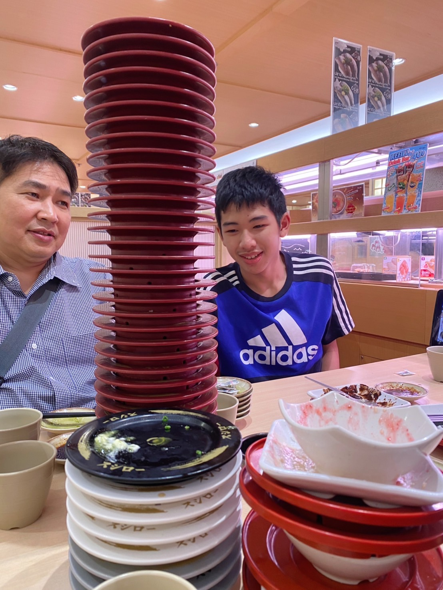
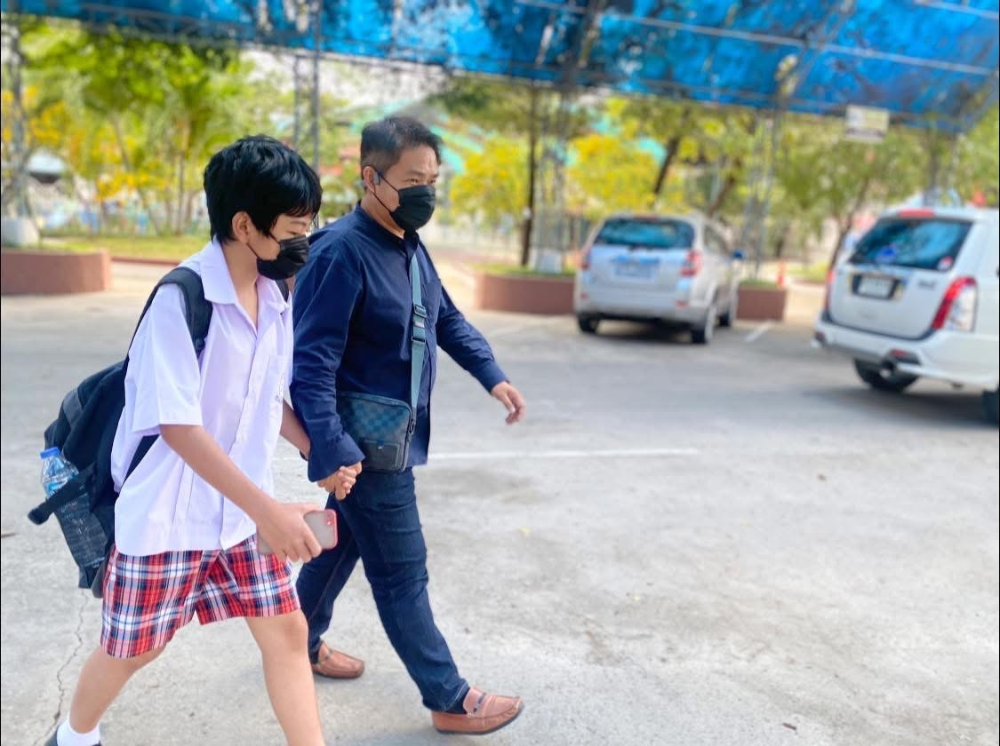
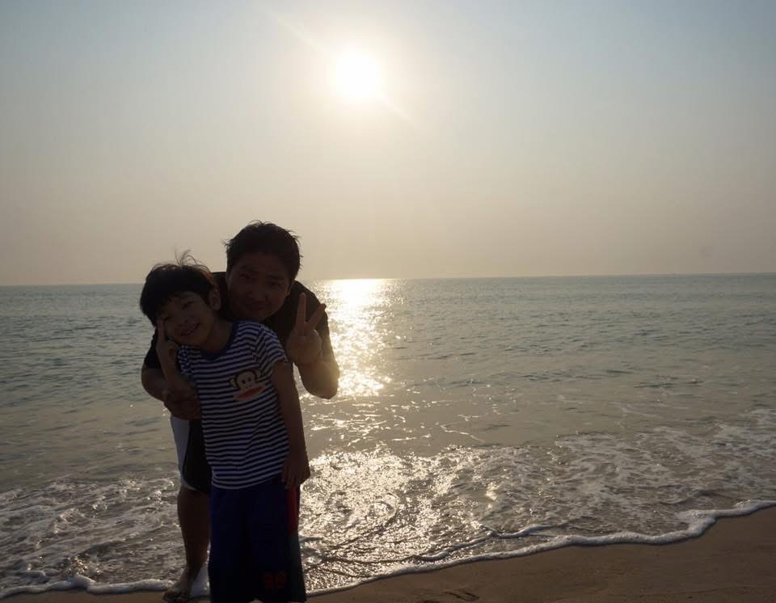
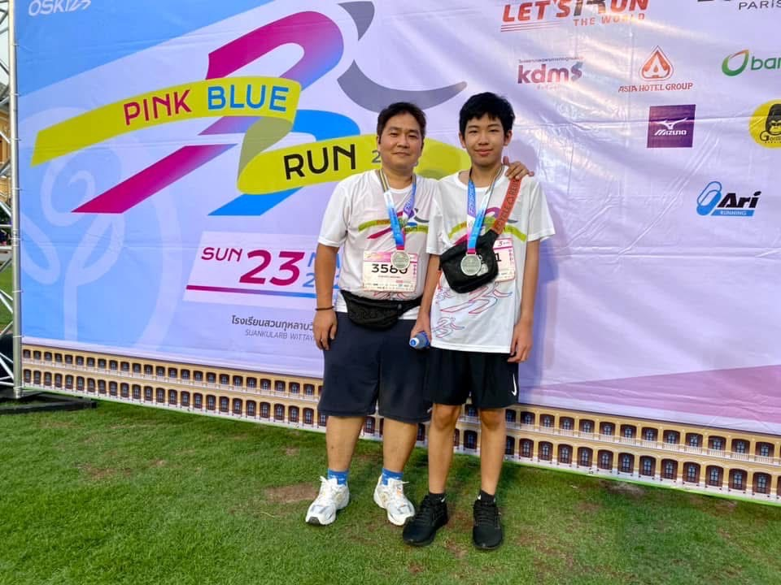

สิ่งที่อยากบอกพ่อ
ขอบคุณสิ่งที่คุณพ่อสอนและมอบให้ผมมาเพื่อให้เติบโตต่อไปครับ รักคุณพ่อเสมอมานะครับ
  
บทกลอนวันพ่อ
พ่อคือผู้นำพาให้มาเกิด พ่อคือผู้ที่เปิดดวงตาใสพ่อคือผู้ชูความหวังให้ตั้งใจ พ่อคือหนึ่งร่มไทรให้ร่มเย็น
พ่อดุจหัวนาวาที่สามารถ พาแคล้วคลาดภัยรุกต้านทุกข์เข็ญ
พ่อคือแสงส่องทางที่พร่างเพ็ญ พ่อดุจเป็นพระพรหมให้ร่มบุญ